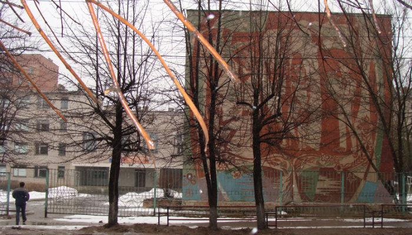

В 1952 году, на окраине города, около Комсомольской рощи, на месте пустыря, возникла маленькая, но очень чистая, красивая, уютная школа. Это и была школа № 7, открывшаяся 1 сентября 1952 года. Школа располагалась по адресу: г. Калуга, Железнодорожный район, ул. Комсомольская роща, дом 1.
Первые два года она была женской, а затем школа стала смешанной. В 1952-53 учебном году в школе обучалось 564 учащих. В 1960 году вдоль школы разбили новую улицу, которую назвали Телевизионной и школе был присвоен новый адрес: г. Калуга, ул. Телевизионная, дом 5.
В 1987 году введена в эксплуатацию четырёхэтажная пристройка на 640 мест. В настоящее время в школе обучается 1150 детей.